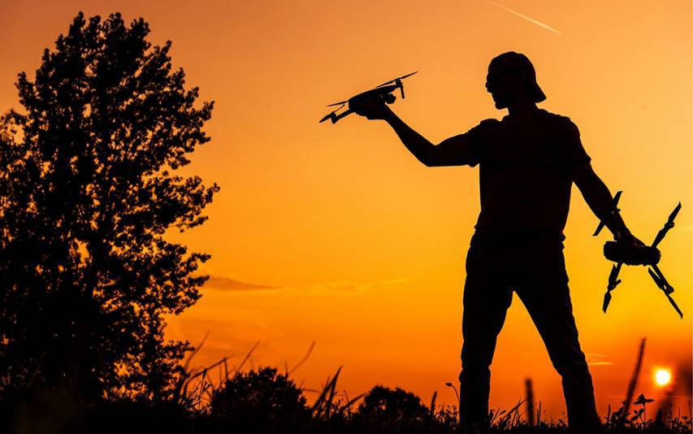
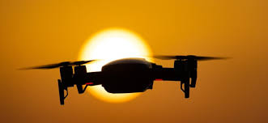

Learn About Drones!
What are Drones
Drones are simply a UAS (Unmanned Aircraft System) which means anything that is flown remotely or unammed by a person. This can mean many things such as a Paper airplane is considered a drone because it's a unmanned system there is no one in the airplane controlling it, only the person that throws the plane who is considered the pilot. This also applies to Robotic drones beacuse the pilot is controlling the drone by using a Transmitter (Rc Remote) to talk to the drone and tell it what to do.
When were drones invented
Drones were invented farther back then you would think , according to the text above a drone is considered a drone by if it's a UAS. The first drone that was controlled remotely was called the Queen bee or (De Havilland DH 82B) this drone was created in 1935, making it the First Modern Drone, the Queen Bee was used for aerial target practice because of its low cost to produce.
When did drones become popular
Recreational drones meaning avaible to purchase for the average consumer became popular in 2015 in the United States of America. These drones were expected to sell approximatley one million by the end of the year. These drones became popular because of how easy it was to gain one and to use it for it's camera properties or just to fly for fun.
Lets Review!
Drones are a UAS which means they are piloted remotely from a controller that the pilot is holding and perfoming actions on to produce a outcome that the drone can understand and do in real time because of the receiver inside of it, which talks to the transmitter in the controller. But who is supposed to keep and eye on the drone if the pilot can't well this is what we call a VO (Visual Observer) whom helps the pilot keep track of where and who their flying near. These are used when flying recreationaly to watch out for upcomming obstacles and people that are in the active flight Zone.